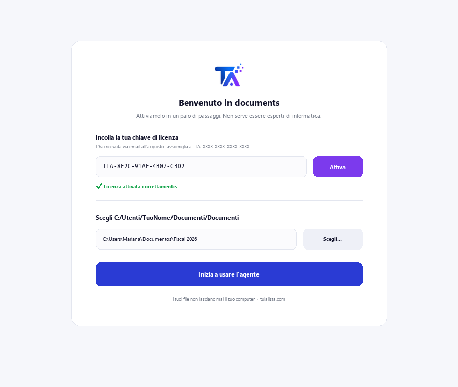
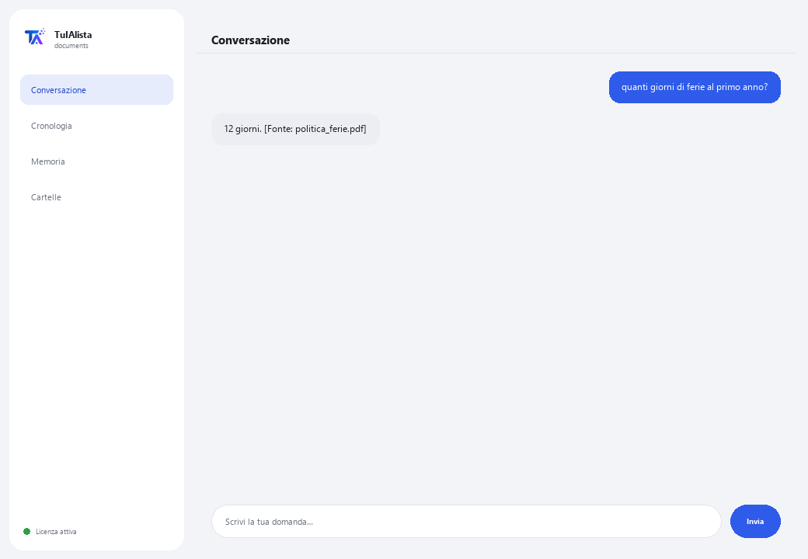

Agente Documenti
Cerca all'interno dei tuoi documenti per te e ti risponde in linguaggio normale, citando da quale file proviene la risposta.
Cosa risolve e cosa ti serve?
Ogni azienda ha cartelle piene di contratti, manuali, fascicoli, politiche e report... e quando qualcuno ha bisogno di un dato, deve aprire file dopo file finché non lo trova. Questo agente legge tutto e risponde direttamente alla tua domanda, citando il file esatto da cui proviene il dato.
- Ti serve: la tua chiave di licenza (TIA-XXXX-XXXX-XXXX-XXXX) e la cartella con i tuoi documenti. Niente Python né conoscenze tecniche.
- Primo risultato in meno di 5 minuti: installi, attivi, scegli la tua cartella e gli chiedi direttamente ciò che devi sapere — nessun comando da imparare.
- I tuoi documenti non lasciano mai il tuo computer — la lettura e l'indicizzazione girano in locale.
soporte@tuialista.com o visita tuialista.com/soporte — di solito rispondiamo lo stesso giorno lavorativo.1 Cosa fa questo agente
È l'agente più semplice del catalogo. Gli indichi la cartella dove conservi i tuoi documenti e lui:
- Li legge tutti (PDF, Word, testo e Markdown), senza che tu debba aprirli uno per uno.
- Risponde alle tue domande in linguaggio normale: “cosa dice il manuale sulle ferie?”
- Cita il file da cui proviene ogni dato, perché tu possa verificarlo.
- Se la risposta non è nei tuoi documenti, te lo dice invece di inventare.
Risultato: trovi qualsiasi dato in pochi secondi, senza ricordare in quale file si trovava.
2 Installazione (2 minuti)
Per Windows. Non serve internet permanente né caricare nulla sul cloud.
Scarica l'installer da tuialista.com/descargar (agente Documenti) e aprilo. Crea un collegamento sul desktop con il logo — non richiede Python né terminale.
Doppio clic sulla nuova icona. Incolla la tua chiave di licenza (ricevuta via email all'acquisto) e premi Attiva. Vedrai un segno di spunta verde quando è valida.
Seleziona la cartella con i tuoi documenti e premi Inizia a usare l'agente. La prossima volta si avvia direttamente — ricorda la tua chiave e la tua cartella.

3 Come usarlo
L'agente apre una finestra di chat, come un'app di messaggistica — non è uno schermo nero da programmatore. Questo è l'agente più diretto del catalogo: nessun comando da memorizzare. Scrivi la tua domanda con parole tue nella casella di testo in basso, premi Invia (o Invio), e l'agente cerca la risposta nei tuoi documenti:

Se nessun documento contiene l'informazione, l'agente te lo dice chiaramente invece di inventare una risposta — questo ti risparmia di continuare a cercare invano. Scrivi esci (o exit) per terminare.
4 Esempi di uso comune
Trovare un dato senza aprire ogni file
qual è la procedura per registrare un nuovo fornitore? — l'agente cerca in tutti i documenti e risponde citando il file corretto.
Consultare una politica aziendale
quanti giorni di ferie corrispondono al primo anno?
Rivedere un fascicolo
quale data di consegna è stata concordata nel fascicolo del progetto Alfa?
Individuare in quale documento si trova qualcosa
in quale file viene menzionata la garanzia del condizionatore? — l'agente ti dice in quale documento appare, perché tu vada direttamente lì.
5 Domande frequenti
I miei documenti vengono caricati su internet?
Ho bisogno di internet per usarlo?
Quali formati di file accetta?
Può leggere un PDF scansionato?
In quale lingua mi risponde?
Quanti documenti può gestire?
Le risposte sono 100% esatte?
Posso cambiare la cartella dei documenti?
Conserva una cronologia delle mie domande?
Sostituisce un motore di ricerca o un gestore documentale?
6 Risoluzione dei problemi
Non legge un PDF / mostra “PDF non letto”
Mostra “Licenza non valida” o chiede di riconnettersi
“Nessun fornitore IA configurato” quando fai una domanda
Mostra “0 documenti indicizzati”
Nessuna di queste soluzioni ha risolto il tuo problema? Scrivici direttamente — saremo felici di rivederlo con te.
soporte@tuialista.com o visita tuialista.com/soporte — di solito rispondiamo lo stesso giorno lavorativo.7 Privacy e riservatezza
I tuoi documenti non lasciano mai il tuo computer.
- L'agente legge e indicizza i file in locale, sul tuo stesso dispositivo. Non li carica su nessun server né li condivide con nessuno.
- La ricerca e selezione dei frammenti rilevanti avviene sul tuo dispositivo.
- L'unica cosa che viaggia su internet è: (1) una verifica che la tua licenza sia attiva — che non include il contenuto dei tuoi documenti —, e (2) quando fai una domanda, viene inviato un frammento dei documenti rilevanti al motore IA per redigere la risposta.